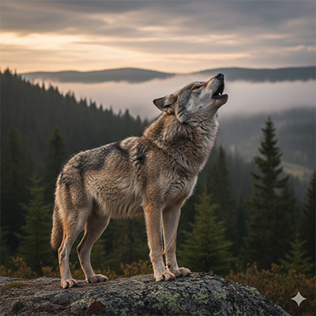
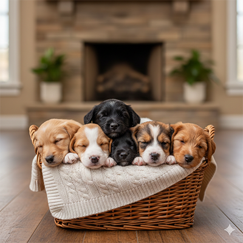
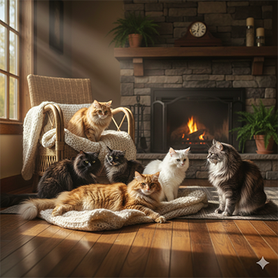
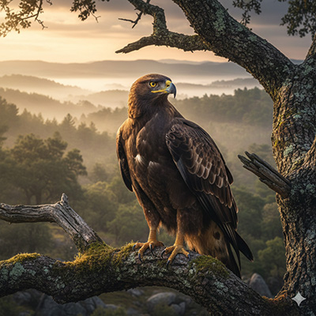
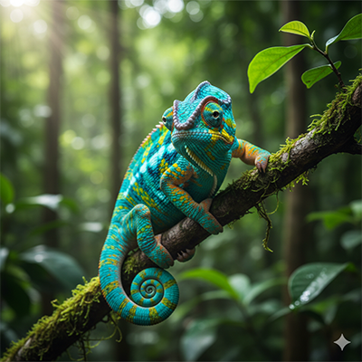
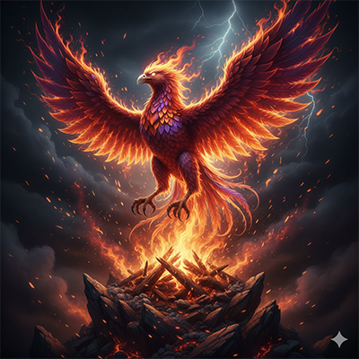

Identidades salvajes
Promo 58: Top Secret Rosies
¡Bienvenidas a nuestra selva de código!
En el camino de convertirnos en desarrolladoras, cada una de nosotras
aporta una esencia única. Al igual que en la naturaleza, en Adalab
convivimos diferentes perfiles que crecen y
aprenden juntas.
Este proyecto nace de nuestro primer ejercicio de presentación, un
catálogo de nuestras
identidades salvajes, donde la
astucia, la visión y la fuerza de los animales que nos representan se
transforman en mis primeras líneas de HTML y CSS.
Lobo

Características de los lobos
- Lealtad a la manada: Instinto social muy fuerte, trabajan en equipo para proteger al grupo.
- Comunicación avanzada: Utilizan aullidos, posturas y expresiones para coordinarse con precisión.
- Gran resistencia: Capaces de recorrer largas distancias y adaptarse a entornos difíciles.
Perro

Características de los perros
- Sociabilidad y lealtad: Crean vínculos profundos y son considerados el mejor amigo del hombre.
- Capacidad de aprendizaje: Su gran inteligencia les permite entender órdenes complejas y adaptarse rápidamente a las rutinas.
- Versatilidad: Facilidad asombrosa para aprender trucos y realizar tareas de apoyo, rescate o trabajo.
Gato

Características de los gatos
- Independencia: Muy autónomos, valoran su espacio personal mientras mantienen un vínculo con sus dueños.
- Agilidad física: Flexibilidad increíble y reflejos asombrosos que les permiten saltar con precisión.
- Instinto cazador: Conservan un agudo sentido de la observación y una curiosidad innata.
Águila

Características de las águilas
- Visión excepcional: Tienen una de las vistas más potentes del reino animal.
- Dominio del aire: Son maestras del vuelo que aprovechan las corrientes térmicas para planear durante horas sin apenas esfuerzo.
- Majestuosidad y fuerza: Gran envergadura y poderosas garras.
Camaleón

Características de los camaleones
- Mimetismo asombroso: Capacidad de cambiar el color de su piel para camuflarse o expresar sus estados de ánimo.
- Visión panorámica: Sus ojos se mueven de forma independiente, lo que les otorga un campo de visión de 360 grados sin mover la cabeza.
- Precisión de caza: Poseen una lengua larga y pegajosa que lanzan para capturar insectos en un instante.
Delfín

Características de los delfines
- Inteligencia superior: Cerebros muy desarrollados, capaces de resolver problemas complejos y comunicarse con lenguajes propios.
- Ecolocalización: Utilizan un sofisticado sistema de sonidos para navegar y localizar objetos bajo el agua con total oscuridad.
- Naturaleza social: Viven en comunidades muy unidas donde demuestran empatía, cuidan de los enfermos y juegan constantemente.
Ave Fénix

Simbolismo del Ave Fénix
- Resiliencia eterna: Símbolo universal de la capacidad de renacer de las propias cenizas y superar cualquier adversidad.
- Transformación constante: Representa la evolución del alma y la idea de que cada final es simplemente un nuevo comienzo lleno de fuerza.
- Inmortalidad espiritual: En las leyendas, su fuego simboliza la purificación y la eterna juventud del espíritu que nunca se rinde.